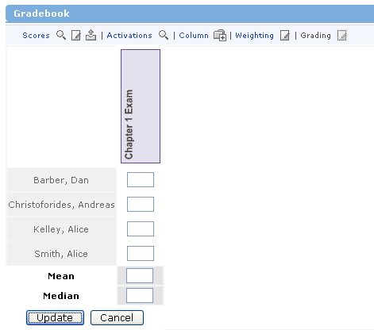

Mean and Median: What do they mean?
Immediately beneath the list of enrolled users, you will see a Mean score and a Median score.
The Mean score is the average of all users' scores. This figure is the sum of all scores divided by the number of users with a score. If a user does not have a score, they are not computed in with the mean score for the class.
The Median score is figured by taking the middle score of all users with a score. The user with this score will have equal numbers of users who scored better and users who scored worse. This score is usually not the same as the Mean score.